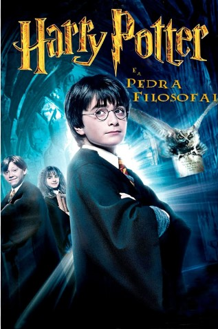

Harry Potter y la Piedra Filosofal
Harry Potter es un niño huérfano que vive con sus únicos parientes vivos, la familia Dursley, en un barrio residencial inglés. En su cumpleaños número 11, Harry es visitado por un misterioso individuo llamado Rubeus Hagrid, quien le revela que realmente él es un mago bastante popular en el mundo mágico por haber sobrevivido al ataque mortal de lord Voldemort cuando solamente tenía un año de edad. Quien al principio sus tíos les dijeron que sus padres fallecieron en un “accidente” pero nunca fue cierto. Tras haber asesinado a sus padres (James y Lily Potter), Voldemort intentó matar a Harry pero no lo consiguió, dejándole solamente una cicatriz en forma de rayo sobre su frente. Sabiendo esto, Hagrid acompaña a Harry para comprar lo necesario con tal de comenzar su formación en el Colegio Hogwarts de Magia y Hechicería.
Harry Potter y la Cámara de los Secretos
Preparándose para una visita de un potencial cliente del tío Vernon, los Dursley confinan a Harry Potter en su habitación. Sin embargo este recibe la visita inesperada de Dobby, un elfo doméstico, que le advierte que no debe regresar a Hogwarts, ya que ahora el lugar no es seguro. Debido a la negativa de Harry, Dobby arruina la cena haciendo que los tíos culparan a Harry. Este incidente fuerza al tío Vernon a encerrar a Harry en su cuarto para que no pueda volver al colegio. Ron, Fred y George Weasley llegan en un volador Ford Anglia celeste 1967, rescatan a Harry y lo llevan a La Madriguera. Harry conoce a la hermana menor de Ron, Ginny, que se sorprende al verlo debido a que le gusta. Esta empieza su primer año en Hogwarts. También conoce al padre de Ron, Arthur Weasley.
Harry Potter y el Cáliz de Fuego
La película inicia cuando Harry Potter (Daniel Radcliffe) empieza a ver en sus sueños al jardinero de los Riddle llamado Frank Bryce, quien escucha a lord Voldemort conspirando junto con Peter Pettigrew (Timothy Spall), su serpiente Nagini y otro joven en la habitación de una casa. Bryce es asesinado por Voldemort al asomarse tras ver luz proveniente de la casa. Más tarde, Harry y sus amigos visitan la final de la Copa Mundial de Quidditch, sin embargo después del partido, la celebración del equipo campeón es súbitamente interrumpida por unos sujetos enmascarados y encapuchados que empiezan a incinerar todo a su paso y a aterrorizar a los espectadores en el lugar, en su intento de escapar Harry tropieza y es pateado en la cabeza quedando inconsciente. Después del incidente, un hombre aparece caminando entre las ruinas para convocar la Marca Tenebrosa en el cielo, por otro lado Harry se despierta del golpe y es encontrado por sus amigos, para posteriormente ser emboscados por un grupo de funcionarios del Ministerio de Magia, entre ellos Barty Crouch Sr. que los acusa de haber lanzado la Marca Tenebrosa, pero Harry sin saber que sucede pregunta de que están hablando, Hermione y Arthur Weasley le explican que es la marca de Voldemort y los que atacaron previamente fueron los Mortífagos de este mago tenebroso.